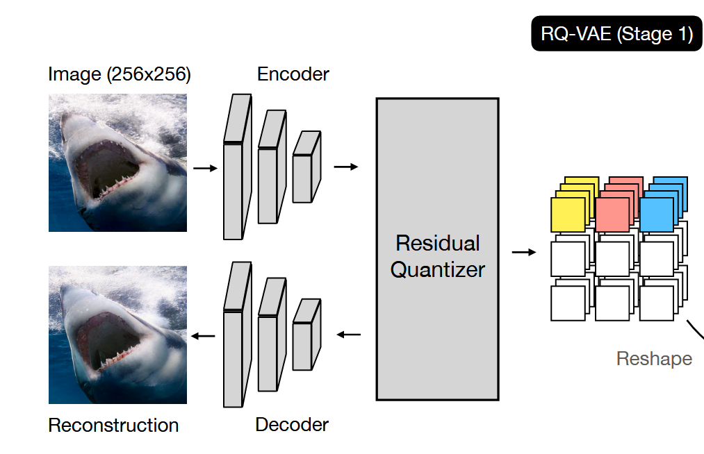
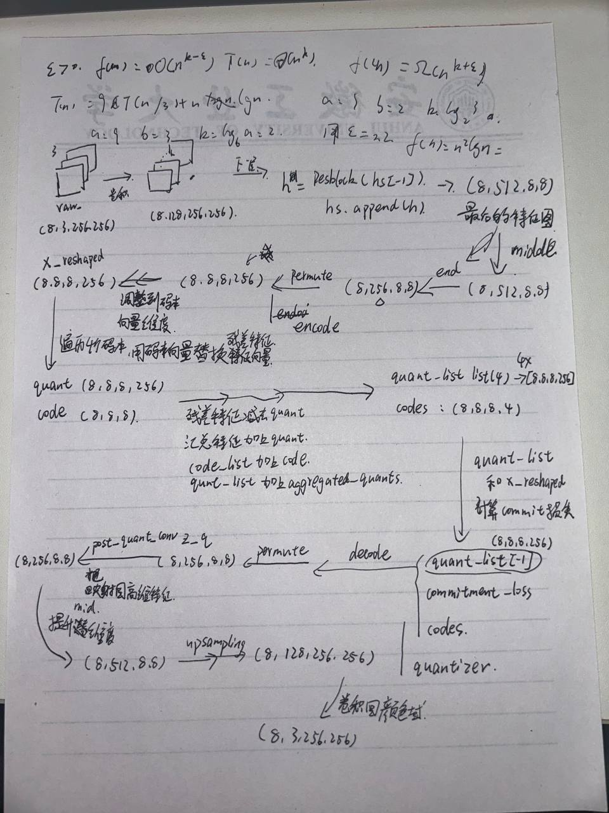

Residual Quantization
核心思想
残差量化（RQ）通过递归细化策略，将一个向量
具体流程
初始化：
初始残差。 递归量化：
对于每个深度： - 选择代码：
，即从共享代码本 中找到与当前残差 最接近的代码。 - 更新残差：
，其中 是代码本中对应的嵌入向量。
- 选择代码：
部分和与最终量化：
- 部分和：
，表示前 个代码嵌入的累加。 - 最终量化结果：
，即所有 个代码嵌入的总和。
- 部分和：
共享代码本的优势
简化超参数：
无需为每个深度单独设计代码本，仅需确定总代码本大小，大幅减少调参复杂度。 提升代码利用率：
所有深度的量化共享同一代码本，允许代码在不同深度重复使用，最大化其效用。
与VQ的对比
| 特性 | VQ | RQ（深度 |
|---|---|---|
| 分区能力 | ||
| 量化精度 | 单次粗粒度逼近 | 递归细化，逐步逼近（粗到细） |
| 代码本复杂度 | 需指数级增大代码本（ |
仅需线性增加深度 |
关键优势
- 高效压缩：通过深度
的递归，以线性复杂度实现指数级的分区能力。 - 灵活性：可根据需求调整深度
，平衡精度与计算成本。 - 训练稳定性：共享代码本避免了代码本崩溃（Codebook Collapse）问题。
应用意义
RQ提供了一种在有限代码本资源下提升量化精度的有效方法，尤其适用于需要高保真重建的任务（如图像生成、语音编码），同时为自回归模型（如PixelCNN）的高效训练奠定基础。
RQ_VAE代码记录
outputs = model(xs)
输入输出
输入：一批次归一化后的图像，shape为{Tensor: (8, 3, 256, 256)}，
输出：outputs {tuple: 3}
outputs[0]: 重建图像，shape为{Tensor: (8, 3, 256, 256)}outputs[1]: quant_losstensor(0.3732, device='cuda:0', grad_fn=<MeanBackward0>)outputs[2]: codetorch.Size([8, 8, 8, 4])
1 | def forward(self, xs): |
z_e是encode之后的结果，{Tensor: (8, 8, 8, 256)}
quantizer
残差块
1 | # downsampling |
- 先做一次卷积得到hs,
hs[0].shape = torch.Size([8, 128, 256, 256])
| i_level | i_block | h = self.down[i_level].block[i_block](hs[-1], temb) |
hs[-1] |
|---|---|---|---|
| 0 | 0 | {Tensor: (8, 128, 256, 256)} |
|
| 0 | 1 | {Tensor: (8, 128, 256, 256)} |
|
| 1 | 0 | {Tensor: (8, 128, 128, 128)} |
|
| 1 | 1 | {Tensor: (8, 128, 128, 128)} |
|
| 2 | 0 | {Tensor: (8, 256, 64, 64)} |
{Tensor: (8, 128, 64, 64)} |
| 2 | 1 | {Tensor: (8, 256, 64, 64)} |
|
| 3 | 0 | {Tensor: (8, 256, 32, 32)} |
|
| 3 | 1 | {Tensor: (8, 256, 32, 32)} |
|
| 4 | 0 | {Tensor: (8, 512, 16, 16)} |
{Tensor: (8, 256, 16, 16)} |
| 4 | 1 | {Tensor: (8, 512, 16, 16)} |
|
| 5 | 0 | {Tensor: (8, 512, 8, 8)} |
|
| 5 | 1 | {Tensor: (8, 512, 8, 8)} |
第一次通过残差块
h = self.down[i_level].block[i_block](hs[-1], temb) hs[-1].shape=torch.Size([8, 128, 256, 256]) temb=Nonei_block=0, i_block=0
| 代码 | 输出 |
|---|---|
h = self.norm1(h) |
torch.Size([8, 128, 256, 256]) |
h = nonlinearity(h) |
torch.Size([8, 128, 256, 256]) |
h = self.conv1(h) |
torch.Size([8, 128, 256, 256]) |
h = self.norm2(h) |
torch.Size([8, 128, 256, 256]) |
h = nonlinearity(h) |
torch.Size([8, 128, 256, 256]) |
h = self.dropout(h) |
torch.Size([8, 128, 256, 256]) |
h = self.conv2(h) |
torch.Size([8, 128, 256, 256]) |
return x+h |
torch.Size([8, 128, 256, 256]) |
hs.append(h) 最后结果追加到hs中
h = self.down[i_level].block[i_block](hs[-1], temb) hs[-1].shape=torch.Size([8, 128, 256, 256]) temb=Nonei_block=0, i_block=1 注意 i_block从0变成了1
| 代码 | 输出 |
|---|---|
h = self.norm1(h) |
torch.Size([8, 128, 256, 256]) |
h = nonlinearity(h) |
torch.Size([8, 128, 256, 256]) |
h = self.conv1(h) |
torch.Size([8, 128, 256, 256]) |
h = self.norm2(h) |
torch.Size([8, 128, 256, 256]) |
h = nonlinearity(h) |
torch.Size([8, 128, 256, 256]) |
h = self.dropout(h) |
torch.Size([8, 128, 256, 256]) |
h = self.conv2(h) |
torch.Size([8, 128, 256, 256]) |
return x+h |
torch.Size([8, 128, 256, 256]) |
hs.append(h) 最后结果追加到hs中
i_level=01
2if i_level != self.num_resolutions-1:
hs.append(self.down[i_level].downsample(hs[-1]))
1 | def forward(self, x): |
残差块的 forward
1 | def _forward(self, x, temb): |
关于残差的解释
好的，我们来用初中生能听懂的话解释一下 ResNet。
想象一下，我们正在教一台电脑认识图片，比如区分猫和狗。我们知道，让电脑学习得更好，通常需要给它很多很多层（就像很多很多步骤）来处理图片的信息。每一层都学习图片的一些特征，比如第一层可能找边缘，第二层可能找形状，后面的层就组合这些形状来判断是猫还是狗。
所以，我们想把这个学习机器做得非常深，有很多很多层，希望它能学得更厉害。
问题来了：
当我们把这个机器做得太深的时候，奇怪的事情发生了：它反而学得更差了！
这就像玩“传话”游戏。如果只有几个人传话，信息不容易出错。但如果让几十个人、上百个人一个接一个地传话，到最后，最开始的信息可能已经完全变样了，甚至变得乱七八糟，根本听不懂了。
在深度学习里，信息经过太多层处理，也会出现类似的问题：最开始学到的重要信息，在经过后面很多层的时候，可能会被“稀释”或者“忘记”，导致整个学习过程变得困难，甚至学不好。
ResNet 是怎么解决这个问题的呢？
ResNet 的想法非常聪明，它加了一个“抄近路”或者叫“跳跃连接”。
想象一下，信息从一层传到下一层，就像走一条路。ResNet 在这条路上加了一条“捷径”。
具体来说，当信息经过几层处理后，ResNet 不仅仅把处理后的结果往下传，它还会把原始的、没有经过这几层处理的信息也复制一份，然后把这份原始信息和经过处理后的信息**加在一起**，再往下传。
这有什么好处呢？
- 防止信息丢失： 就像你在传话的时候，如果担心信息传丢，你可以时不时地把最开始的话再重复一遍给后面的人听。ResNet 的“抄近路”就是这个作用，它保证了原始的重要信息能够直接传递到后面的层，不会在中间的层里完全丢失或变质。
- 让学习更容易： 想象一下，如果让你学习一个非常复杂的知识，你可以选择从头开始学每一个细节，也可以选择在学习新知识的同时，时不时地回顾和利用你已经掌握的基础知识。ResNet 的“抄近路”让网络更容易学习“变化”或者“残差”（这就是 ResNet 名字里“Res”的意思），而不是每次都必须从零开始学习全新的东西。这让深层网络更容易训练。
简单来说：
ResNet 就像给深度学习网络加了“记忆通道”或者“信息备份线”。它确保了即使网络变得非常深，最开始学到的重要信息也能通过“抄近路”的方式直接传递到后面的层，从而解决了深层网络学习困难的问题，让我们可以构建更深、更强大的网络来完成更复杂的任务，比如更准确地识别图片。
所以，ResNet 的核心思想就是那个“抄近路”或者叫“跳跃连接”，它把原始信息和处理后的信息加在一起，帮助深层网络更好地学习。
降采样
1 | if i_level != self.num_resolutions-1: |
1 | class Downsample(nn.Module): |
卷积下采样 （ with_conv=True ）：
- 首先应用非对称填充： pad = (0,1,0,1) ，这表示在右侧和底部各填充1个像素
- 填充模式为”constant”，填充值为常数值0
- 然后应用之前定义的卷积层，步长为2，实现下采样
- 注释中提到”no asymmetric padding in torch conv”，这是因为PyTorch的卷积层只支持对称填充，所以需要手动实现非对称填充
平均池化下采样 （ with_conv=False ）：
- 使用2×2的平均池化，步长为2
- 这种方式计算量更小，但可能会丢失更多信息
middle && end
1 | # middle |
1 | # middle |
middle 部分位于下采样(downSampling)阶段之后，是编码器的中间处理模块。它的主要功能是：
- 深度特征处理 ：在所有下采样完成后，对最小分辨率的特征图进行进一步处理
- 全局信息整合 ：通过注意力机制捕获特征图中的长距离依赖关系
end部分是编码器的最后阶段，负责将处理后的特征映射到潜在空间。它的主要功能是：
- 特征标准化 ：确保特征分布稳定
- 非线性变换 ：增加模型表达能力
- 通道映射 ：将特征映射到潜在空间的维度
VQEmbedding
VQEmbedding 类是 VQ-VAE (Vector Quantized Variational Autoencoder) 或 RQ-VAE (Residual Quantization VAE) 中的核心组件，负责执行向量量化操作。它的主要功能是将输入的连续特征向量映射到离散的码本（codebook）中的一个码字（embedding vector），并提供一种机制来更新这个码本。
这个类继承自 PyTorch 的 nn.Embedding 模块，并在此基础上增加了 EMA (Exponential Moving Average) 更新码本和处理未使用码字的功能。
核心思想：
- 码本作为
nn.Embedding.weight： 利用nn.Embedding的weight参数来存储码本中的所有码字。weight是一个形状为(num_embeddings, embedding_dim)的张量，其中num_embeddings是码本大小，embedding_dim是码字的维度。 - 查找最近邻： 对于输入的连续特征向量，计算它与码本中所有码字的距离，并找到距离最近的那个码字对应的索引。
- 码字替换： 使用找到的索引从码本中查找对应的码字向量作为量化结果。
- 码本更新 (EMA)： 在训练过程中，使用 EMA 机制根据当前批次中特征向量到码字的分配情况来更新码本中的码字。这是一种替代标准梯度下降更新码本的方法。
- 处理未使用码字： 识别在 EMA 更新中长时间未被使用的码字，并用新的向量替换它们，以提高码本的利用率。
类结构和方法解析：
__init__(self, n_embed, embed_dim, ema=True, decay=0.99, restart_unused_codes=True, eps=1e-5)- 目的： 初始化 VQ 嵌入模块。
- 参数：
n_embed: 码本中实际码字的数量。embed_dim: 每个码字的维度。ema: 是否使用 EMA 更新码本。如果为False，则码本不会被更新（或者需要外部机制更新）。decay: EMA 的衰减率，用于平滑更新。值越接近 1，EMA 越稳定。restart_unused_codes: 是否启用未使用码字的重启机制。eps: 用于数值稳定的小值，特别是在 EMA 更新中除以使用计数时。
- 初始化过程：
super().__init__(n_embed + 1, embed_dim, padding_idx=n_embed): 调用父类nn.Embedding的构造函数。注意这里码本大小是n_embed + 1。最后一个索引n_embed被指定为padding_idx。这意味着self.weight的形状是(n_embed + 1, embed_dim)。实际用于量化的码字是索引0到n_embed - 1对应的向量。索引n_embed对应的向量是 padding 向量，通常不参与量化或 EMA 更新。- 存储参数
ema,decay,eps,restart_unused_codes,n_embed。 if self.ema:: 如果启用 EMA：_ = [p.requires_grad_(False) for p in self.parameters()]: 关键一步！ 禁用所有参数（包括self.weight）的梯度计算。这意味着码本self.weight不会通过标准的loss.backward()来更新，而是完全依赖于 EMA 机制。self.register_buffer('cluster_size_ema', torch.zeros(n_embed)): 注册一个 buffer 来存储每个码字（索引 0 到n_embed - 1）的 EMA 使用计数。初始化为零。Buffer 是模型状态的一部分，但不是需要梯度的参数。self.register_buffer('embed_ema', self.weight[:-1, :].detach().clone()): 注册一个 buffer 来存储每个码字（索引 0 到n_embed - 1）的 EMA 累积向量和。初始化为码本的初始值。
compute_distances(self, inputs)(@torch.no_grad())- 目的： 计算输入向量与码本中所有码字之间的平方欧几里得距离。
- 输入：
inputs(形状..., embed_dim)，输入的连续特征向量。 - 过程：
- 获取实际码本（排除 padding 向量）：
self.weight[:-1, :]。 - 使用高效的矩阵乘法计算平方欧几里得距离：
||a - b||^2 = ||a||^2 + ||b||^2 - 2a^T b。 - 将结果重塑回原始输入形状加上码本大小的维度。
- 获取实际码本（排除 padding 向量）：
- 输出：
distances(形状..., n_embed)，其中distances[..., i]是输入向量与第i个码字的平方距离。@torch.no_grad()确保此操作不记录梯度。
find_nearest_embedding(self, inputs)(@torch.no_grad())- 目的： 找到输入向量在码本中的最近邻码字对应的索引。
- 输入：
inputs(形状..., embed_dim)。 - 过程：
- 调用
compute_distances计算距离。 distances.argmin(dim=-1): 在最后一个维度（码本维度）上找到最小值对应的索引。
- 调用
- 输出：
embed_idxs(形状...)，最近邻码字的索引。@torch.no_grad()确保此操作不记录梯度。这是量化过程中的离散步骤。
_tile_with_noise(self, x, target_n)(@torch.no_grad())- 目的： 辅助
restart_unused_codes功能，从输入向量中生成一个带有噪声的、数量足够的向量池。 - 输入：
x(形状B, embed_dim)，当前批次的输入向量；target_n(整数)，目标向量数量。 - 过程： 将输入批次重复多次直到数量达到
target_n，并添加少量高斯噪声。 - 输出： 形状为
(>=target_n, embed_dim)的向量张量。@torch.no_grad()确保此操作不记录梯度。
- 目的： 辅助
_update_buffers(self, vectors, idxs)(@torch.no_grad())- 目的： 根据当前批次的输入向量及其对应的最近邻索引，更新 EMA 缓冲区 (
cluster_size_ema和embed_ema)。 - 输入：
vectors(形状..., embed_dim)，当前批次的输入向量；idxs(形状...)，这些向量对应的最近邻码字索引。 - 过程：
- 将输入向量和索引展平。
- 计算当前批次中每个码字的使用次数 (
cluster_size) 和分配给每个码字的向量之和 (vectors_sum_per_cluster)。这通过构建一个 one-hot 矩阵并进行矩阵乘法高效完成。 if dist.is_initialized(): dist.all_reduce(...): 如果使用分布式训练，将这些统计量在所有进程之间进行累加，确保 EMA 更新基于全局数据。- EMA 更新： 使用
self.decay更新self.cluster_size_ema和self.embed_ema。 if self.restart_unused_codes:: 如果启用未使用码字重启：- 使用
_tile_with_noise从当前批次生成一个随机向量池。 if dist.is_initialized(): dist.broadcast(...): 在分布式训练中，确保所有进程使用相同的随机向量池（通常从主进程广播）。- 识别 EMA 使用计数小于 1 的码字（即未使用码字）。
- 用随机向量池中的向量替换这些未使用码字的
embed_ema。 - 将这些被替换码字的
cluster_size_ema重置为 1。
- 使用
- 输出： 无。
@torch.no_grad()确保此操作不记录梯度。
- 目的： 根据当前批次的输入向量及其对应的最近邻索引，更新 EMA 缓冲区 (
_update_embedding(self)(@torch.no_grad())- 目的： 使用 EMA 缓冲区中的统计量来更新实际的码本权重
self.weight。 - 输入： 无。
- 过程：
- 计算归一化的使用计数：
normalized_cluster_size = (n * (self.cluster_size_ema + self.eps) / (n + n_embed * self.eps))。这里n是总的使用计数。添加self.eps防止除以零，并进行平滑。 - 更新码本权重：
self.weight[:-1, :] = self.embed_ema / normalized_cluster_size.reshape(-1, 1)。新的码字是 EMA 累积向量和除以归一化的 EMA 使用计数。
- 计算归一化的使用计数：
- 输出： 无。
@torch.no_grad()确保此操作不记录梯度。
- 目的： 使用 EMA 缓冲区中的统计量来更新实际的码本权重
forward(self, inputs)- 目的： 执行 VQ 量化的前向传播。
- 输入：
inputs(形状..., embed_dim)。 - 过程：
embed_idxs = self.find_nearest_embedding(inputs): 找到最近邻码字的索引。if self.training and self.ema:: 如果在训练模式且启用 EMA：self._update_buffers(inputs, embed_idxs): 根据当前批次更新 EMA 缓冲区。
embeds = self.embed(embed_idxs): 使用找到的索引从当前的self.weight中查找对应的码字向量。if self.ema and self.training:: 如果在训练模式且启用 EMA：self._update_embedding(): 使用更新后的 EMA 缓冲区来更新self.weight。注意： 这个更新发生在查找之后，意味着当前批次的查找使用了更新前的码本，但码本在当前前向传播结束时被更新，供下一个批次使用。
- 输出：
embeds(形状..., embed_dim)，量化后的向量（即查找到的码字）；embed_idxs(形状...)，选定的码字索引。
embed(self, idxs)- 目的： 标准的嵌入查找方法，用于根据索引获取码字向量。
- 输入：
idxs(形状...)，码字索引。 - 过程： 调用父类
nn.Embedding的forward方法进行查找。 - 输出： 形状为
idxs.shape + (embed_dim,)的码字向量。
总结：
VQEmbedding 类是一个带有 EMA 更新和未使用码字重启功能的向量量化模块。它利用 nn.Embedding 的 weight 作为码本，通过计算距离找到最近邻码字，并使用 EMA 机制（而不是梯度下降）来更新码本。@torch.no_grad() 装饰器被广泛用于量化查找和码本更新步骤，因为这些步骤不应参与标准的反向传播。EMA 更新缓冲区 (cluster_size_ema, embed_ema) 记录了码字的使用情况和累积向量和，并周期性地用于更新实际的码本权重 self.weight。restart_unused_codes 机制进一步提高了码本的效率。
quantizer
损失
commit损失
1 | commitment_loss = self.compute_commitment_loss(x_reshaped, quant_list) |
在计算 commitment_loss 时：
x_reshaped: 原始图像经过编码器（Encoder）处理后得到的潜在特征（latent features），然后通过 to_code_shape 方法进行重新整形，这一步将形状为 (B, H, W, D) 的特征张量重组为形状为 (B, h, w, embed_dim) 的张量。具体来说，它将空间维度 H 和 W 分别划分为 h×rH 和 w×rW ，然后重新排列这些维度，将每个空间位置的特征维度扩展，从而降低空间分辨率但增加特征维度，为残差量化过程做准备。quant_list: 是一个列表，包含残差量化过程中每一层累积得到的量化特征。列表中的每个元素形状也是(B, h, w, embed_dim)。列表长度取决于量化层数。
commitment_loss 衡量的是 x_reshaped 与 quant_list 中每一层累积量化结果之间的差异。计算输入特征 x 与各个码本累积量化结果之间的均方误差（MSE）。
1 | def compute_commitment_loss(self, x, quant_list): |
编码器和解码器结构设计不同的原因
编码器结构（先降采样，再middle，最后end）
编码器的结构设计遵循了”逐步压缩信息”的原则：
先降采样：
- 目的是逐步减小特征图的空间尺寸，同时增加通道数
- 通过多个下采样层，将高分辨率的输入图像（如256×256）压缩到低分辨率（如8×8）
- 每次降采样都伴随着特征通道数的增加，保留更多抽象特征
中间层（middle）：
- 在最低分辨率上处理高维特征
- 使用ResNet块和注意力机制捕获全局依赖关系
- 在压缩的特征空间中进一步提取和重组信息
结束层（end）：
- 将高维特征映射到适合量化的低维空间
- 准备特征用于后续的向量量化过程
解码器结构（先middle，再上采样，最后end）
解码器的结构设计遵循了”逐步重建信息”的原则：
先middle层：
- 接收量化后的低分辨率特征
- 通过ResNet块和注意力机制重新处理这些压缩特征
- 为后续的上采样过程准备丰富的特征表示
上采样层：
- 逐步增加特征图的空间尺寸，同时减少通道数
- 从低分辨率（如8×8）逐步恢复到原始分辨率（如256×256）
- 每次上采样都伴随着特征通道数的减少，逐步恢复空间细节
结束层（end）：
- 将特征映射回原始图像空间（通常是RGB三通道）
- 生成最终的重建图像
为什么采用这种对称但不完全相同的结构？
信息流向的考虑：
- 编码器：从高维空间（图像）→低维空间（潜在表示）
- 解码器：从低维空间（潜在表示）→高维空间（图像）
处理顺序的逻辑性：
- 编码器需要先降低分辨率再进行全局处理，因为这样可以在计算效率高的低分辨率下捕获全局特征
- 解码器需要先在低分辨率下处理全局信息，然后再逐步恢复空间细节
计算效率：
- middle层通常包含注意力机制，在低分辨率下计算注意力更加高效
- 在编码器降采样后和解码器上采样前应用middle层，可以在最小的特征图尺寸上处理全局依赖关系
特征转换的自然流程：
- 编码过程：细节压缩→抽象表示→潜在编码
- 解码过程：潜在编码→特征扩展→细节重建
总的来说，这种设计反映了自编码器的基本原理：编码器负责将高维输入压缩到低维潜在空间，解码器负责从低维潜在空间重建高维输出。两者的结构虽然在某种程度上是对称的（都包含降采样/上采样和middle层），但处理顺序的不同反映了它们在信息流动方向上的根本差异。